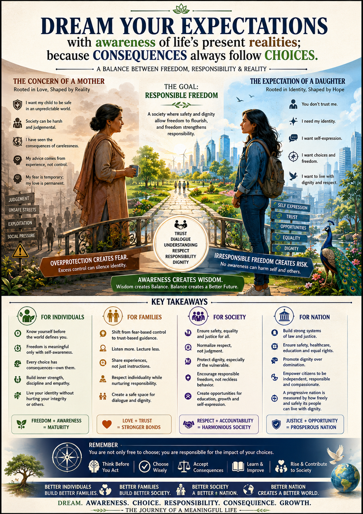

When freedom fears society, and protection fears freedom, civilization remains incomplete.
Independence vs. Freedom
Independence is largely structural—freedom from external control. Freedom, however, is deeply experiential; it is the meaningful ability to live with dignity and safety. A nation or an individual may be independent yet remain psychologically trapped or culturally insecure.
The Tension of Protection
The conflict between a mother’s caution and a daughter’s aspiration is often not "oppression vs. rebellion," but protection vs. self-expression. Fear-based control grows where societal trust is weak. Restrictions are often adaptive responses to an imperfect world containing violence and weak accountability.
The Individual Task
Maturity lies in preserving identity without becoming destructive toward collective coexistence.
- Self-expression with awareness.
- Individuality with responsibility.
- Freedom without losing sensitivity.
The Societal Task
Responsible freedom requires responsible systems. True progress is measured by the safety of our humanity.
- Reduce exploitation and violence.
- Prepare individuals for reality via trust.
- Replace reactive rebellion with conscious coexistence.
“True progress is measured by how safely and responsibly individuals can preserve their dignity, identity, and humanity within society.”